Wizard / castle · seed 180
Upright · wizard
CS180Intro to Computer Vision and Computational Photography
UC Berkeley Fall 2026
From pretrained image editing to flow matching from scratch.
Part A explores denoising, generation, and image editing with PixNerd. Part B builds on these ideas by training U-Nets to generate handwritten digits.
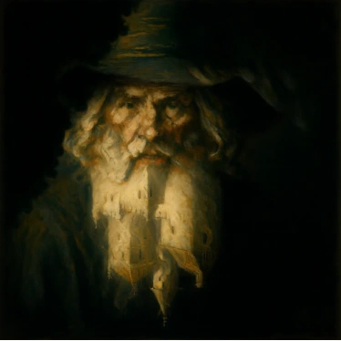
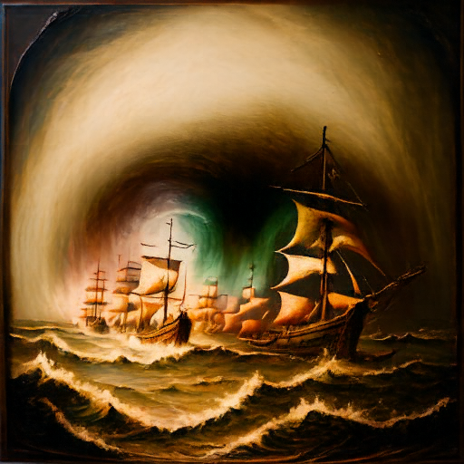
I used PixNerd-XXL-P16-T2I to denoise images, generate new ones, and make edits with text prompts. No additional training was needed. These experiments follow the linear path below, where x1 is a clean image and ε is Gaussian noise.
Source images are center-cropped, resized, and normalized to [−1, 1]. I reuse the same noise at t = 0.25, 0.50, and 0.75 for the initial denoising comparisons. The model also receives a text embedding c; an empty prompt supplies the unconditional prediction used later for guidance.
Project brief: CS180 Part A handout ↗.
FOLLOWING THE VELOCITY FIELD
I first mixed the Statue of Liberty with noise along this path. At t = 0.25, noise dominates; as t increases, the statue’s outline and details emerge. Holding the noise fixed isolates the effect of time and gives us comparable inputs for the denoising methods below.
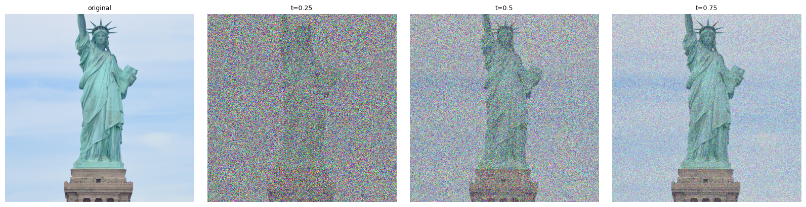
As a baseline, I divided each noisy input by t to restore the clean image’s amplitude, then applied Gaussian blur. I tested σ = 1, 2, 4, 8, and 16 and kept the result with the lowest mean squared error (MSE) against the original. This gives blur an advantage: the clean reference would usually be unavailable when choosing its strength.
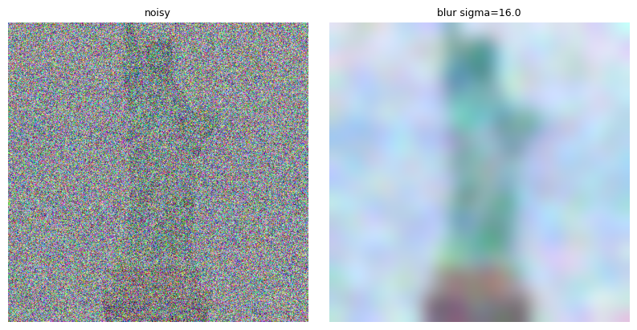
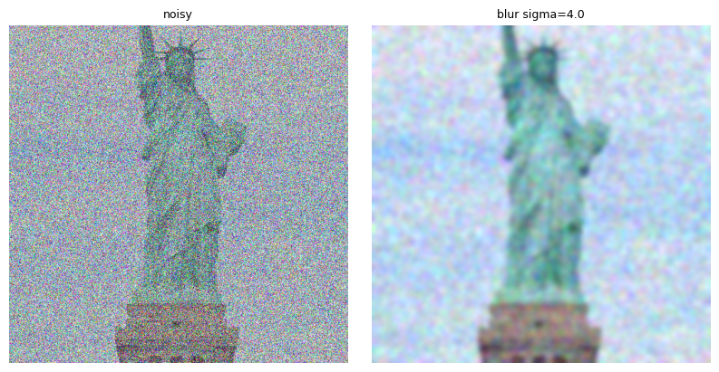
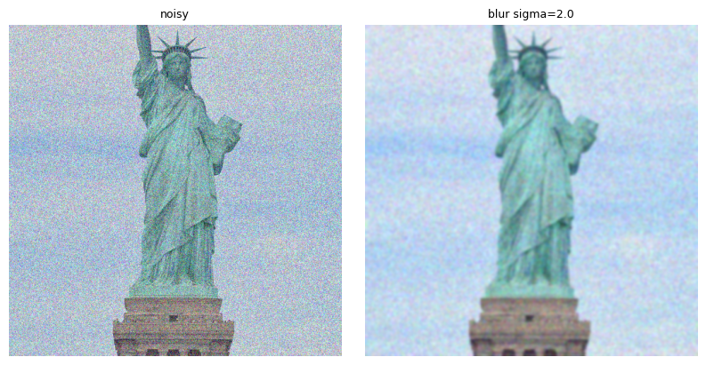
OBSERVATIONBlur suppresses noise but also removes meaningful edges. Even the selected results soften the crown, face, and robe, motivating a denoiser that can use learned image structure.
Next, I used the prompt a high quality photo
to predict a velocity field: the image’s rate of change at the current time. Multiplying this prediction by the remaining time, 1 − t, gives a one-step estimate of the clean image. Earlier starting times require a longer extrapolation from less reliable image information.
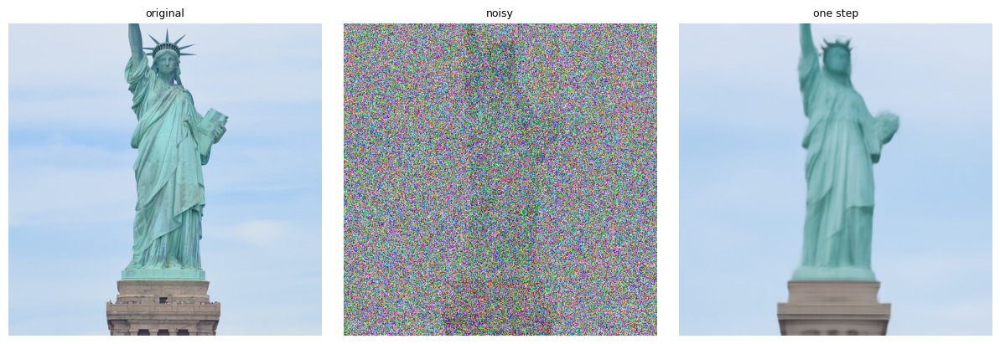
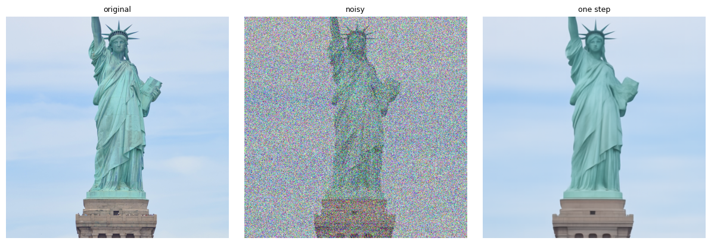
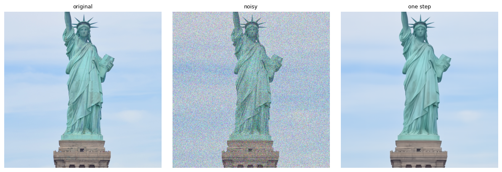
To examine these predictions, I compared the model’s update, (1 − t)vθ, with the true update, (1 − t)(x1 − ε). Both use the same remaining time. Their RGB root-mean-square difference at each pixel produces the error map below, showing where the predicted update differs from the one needed to recover this photograph.
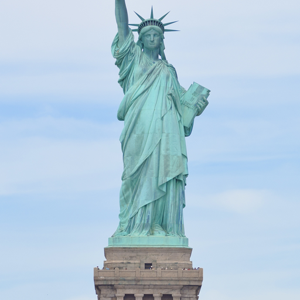
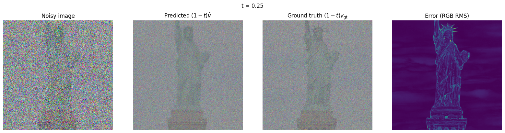
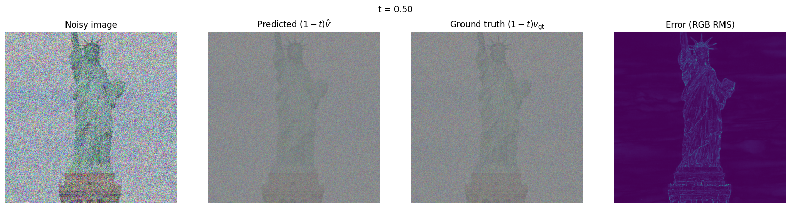
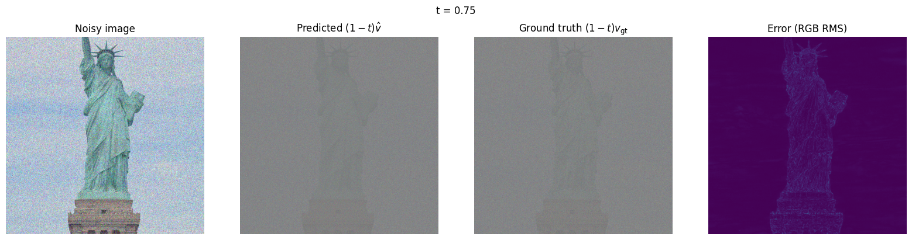
READING THE MAPSUpdates share a symmetric display scale, with zero shown as gray. Heatmaps also share a scale: purple indicates smaller errors, and green/yellow larger ones. The prominent outline at t = 0.25 shows difficulty recovering the statue’s edges under heavy noise.
A one-step estimate holds the initial velocity fixed. Euler sampling instead predicts a new velocity after each small update, allowing the direction to change along the path. Starting from t = 0.50 with h = 0.02 takes 25 updates to reach t = 1; the trajectory below shows the image every fifth update.
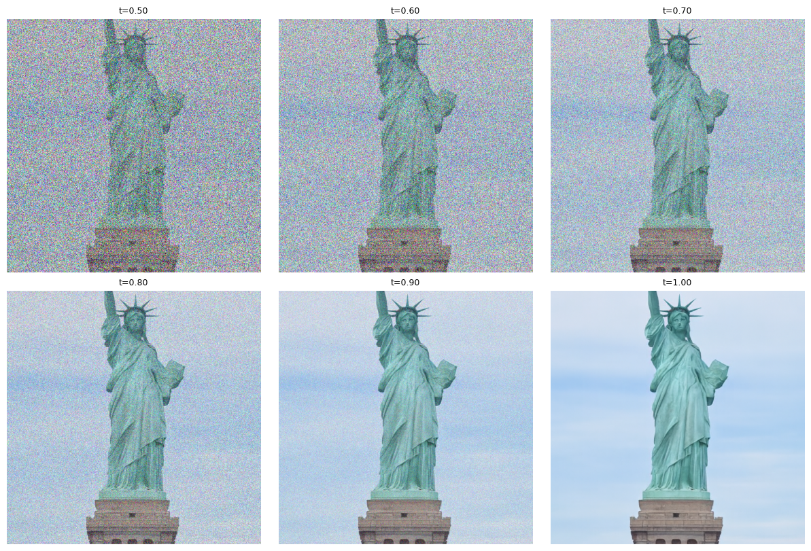
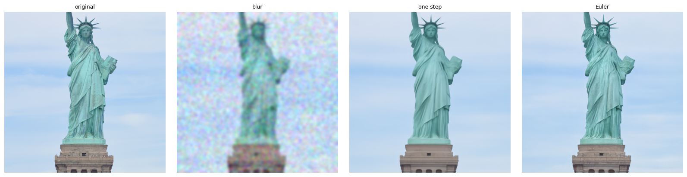
| Method | MSE ↓ |
|---|---|
| Gaussian blur | 0.011602 |
| One-step denoising | 0.003123 |
| Euler denoising | 0.003702 |
OBSERVATIONBoth learned methods preserve more structure than blur, but the one-step estimate has slightly lower MSE than Euler sampling in this run. More updates can produce a plausible image without improving its pixel-wise match to the original.
Constant-velocity tests verified the sampler’s total displacement, including a shortened final step when needed to reach t = 1.
Starting at t = 0 removes the source photograph, so generation depends on the initial noise and text prompt. I generated five samples with a high quality photo
, using different seeds and 50 Euler steps each.
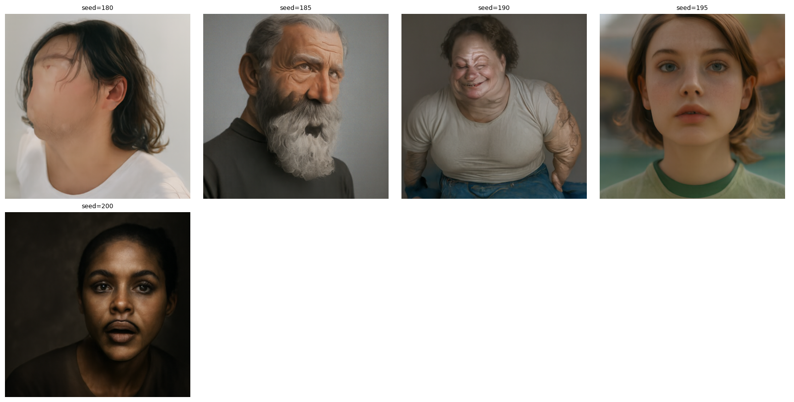
OBSERVATIONAll five samples are portraits despite the generic prompt. Seeds 180 and 190 have noticeable facial distortions, which the guidance experiment below attempts to reduce.
TURNING UP THE TEXT CONDITION
Classifier-free guidance (CFG) strengthens the prompt’s influence by combining a conditional prediction vc with an empty-prompt prediction vu. Both see the same image and time. Using Part A’s convention, I add w = 7 times their difference to vc, then repeat the previous experiment with the same seeds and prompt.
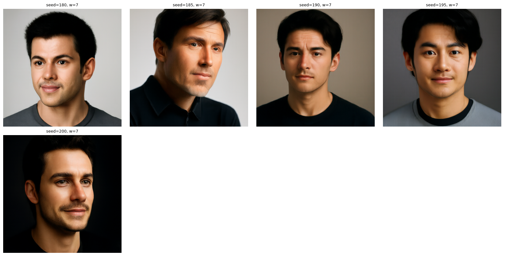
OBSERVATIONThe guided faces have more coherent features and smoother lighting. Their portrait compositions also become more similar, suggesting a tradeoff between visual consistency and variety in these five samples.
USING THE GENERATOR AS A CREATIVE TOOL
The same guided sampler can edit an existing photograph. I mixed each landmark with noise at seven starting times, then sampled to t = 1 using a high quality photo
. Lower starting times erase more source information and allow larger changes; higher times preserve more of the landmark’s structure.
Every sweep below shows the original and all seven starting times. Noise seed 180, w = 7, h = 0.02.

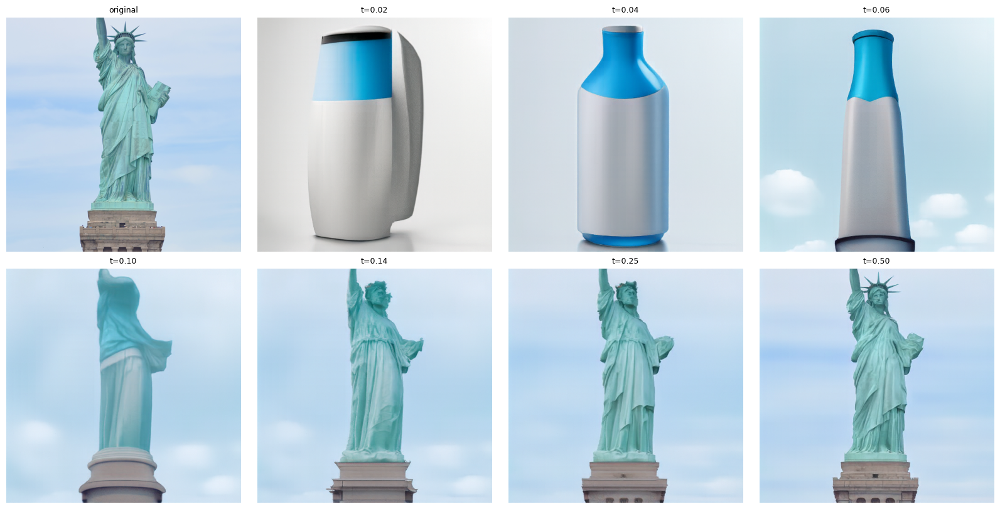
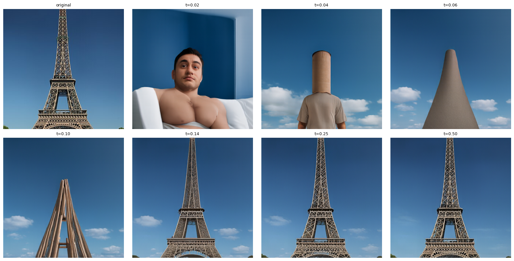
I repeated this procedure on a footage picture from the series Bleach: Thousand-Year Blood War and two drawings by my sister, whom I thank for letting me use her drawings for this project. Keeping the generic photo prompt tests whether denoising can make an illustration look photographic without explicitly describing its subject.
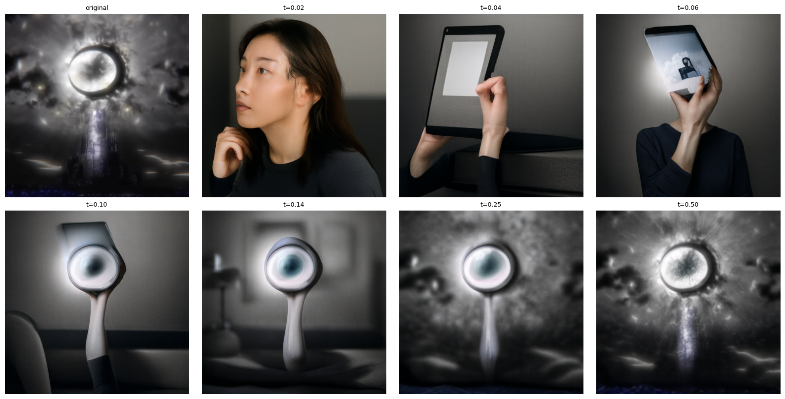
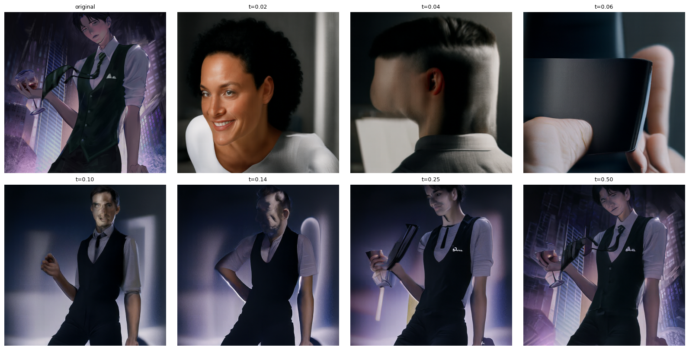
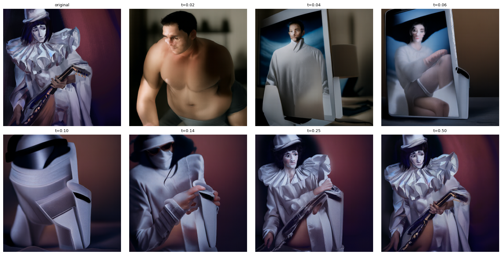
OBSERVATIONIntermediate starting times introduce photographic textures while retaining parts of the pose and clothing. Lower times often replace the subject entirely; higher times preserve both the character and its illustrated style.
The generic prompt leaves the reinterpretation open-ended. To direct it, I kept the source images and sampling settings fixed and changed only the prompts. Each requested subject shares a visual feature with its source: the Campanile’s height, Liberty’s pose, or the Eiffel Tower’s steel framework.
Prompta high quality photo of a tall lighthouse on a rocky coast during a storm, its beacon shining through fog
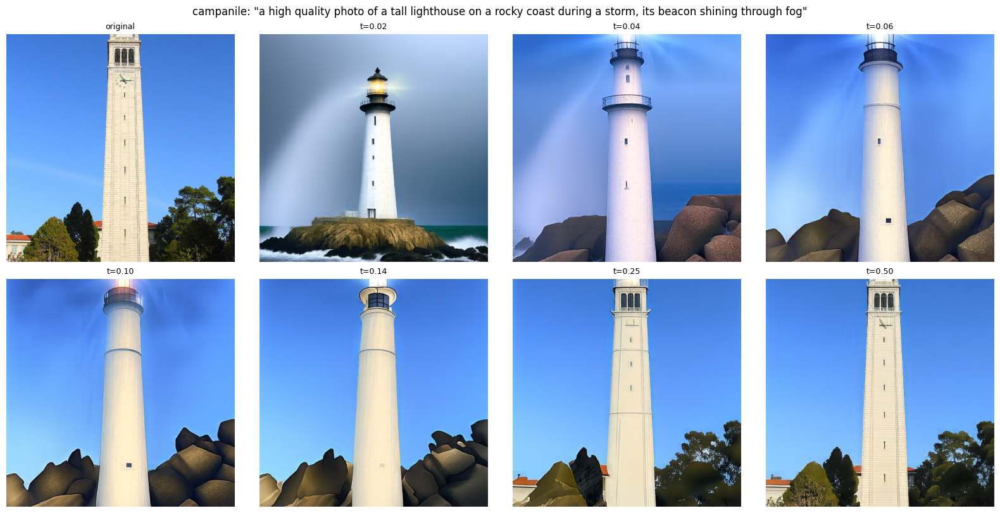
Prompta cinematic photo of a colossal astronaut holding a glowing moon overhead, standing on a futuristic pedestal
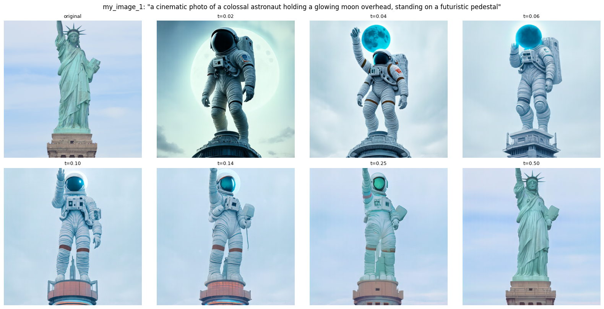
Prompta high quality photo of a gigantic mechanical giraffe standing in a city park, made of intricate steel framework
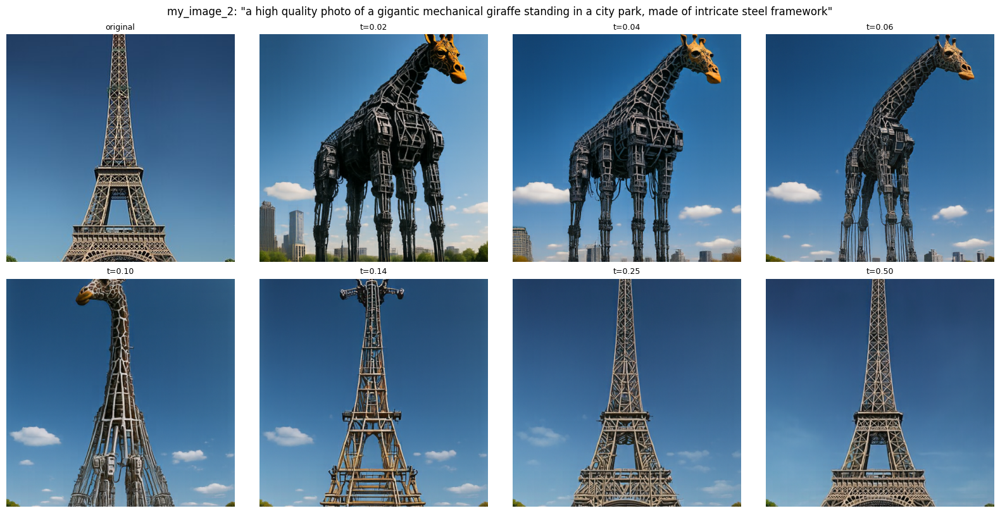
OBSERVATIONAt intermediate times, the new subjects inherit the landmarks’ compositions. Lower times favor the prompt more strongly, while higher times restore the original landmarks. Starting time therefore controls how much source structure survives the requested transformation.
A visual anagram matches one prompt upright and another after a 180° rotation. At each Euler step, I predict guided velocities for both orientations, rotate the second velocity back, and average them. Aligning the predictions before averaging lets both prompts influence the same pixels. Use the buttons below to compare the two readings.
Upright · wizard
Upright · curled cat
Upright promptan oil painting of a wise old wizard with a long white beard
Rotated promptan oil painting of a medieval castle on a rocky mountain
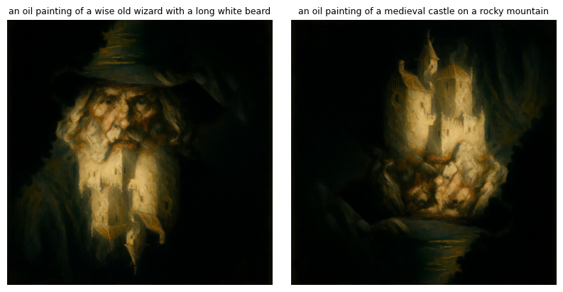
Upright prompta detailed watercolor painting of a sleeping orange cat curled into a circle
Rotated prompta detailed watercolor painting of a great horned owl facing forward
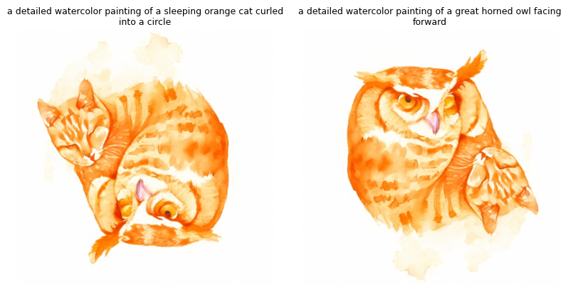
Where anagrams change with orientation, hybrid images aim to change with viewing distance. Broad shapes remain visible from far away, while fine details dominate up close. I combine these scales by adding the low-frequency part of one guided velocity to the high-frequency part of another at every sampling step.
The full-size and 64 × 64 views below approximate close and distant viewing. The two prompt pairs use seeds 180 and 181, with w = 7 and h = 0.02.
Distant view · low frequenciesa detailed lithograph of a wolf's face, centered and symmetrical
Close view · high frequenciesa detailed lithograph of a dense snowy pine forest
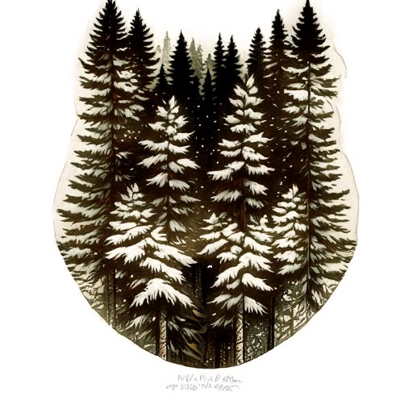
OBSERVATIONThe forest dominates up close. In the smaller view, its branches merge into a roughly symmetric face, but the intended wolf remains subtle.
Distant view · low frequenciesan oil painting of a large human eye, centered
Close view · high frequenciesan oil painting of a stormy ocean filled with sailing ships
OBSERVATIONThe eye reads more clearly at small scale, while ships and waves provide the close-up detail. Both subjects remain visible at full size, so the result blends interpretations rather than fully hiding one.
PART B / LEARNING FROM SCRATCH
Part A used a pretrained model; here, I trained U-Nets from scratch on MNIST. I began with single-step denoising, then learned a velocity field for generation. All networks use convolution, BatchNorm, GELU, and skip connections. Clean images are scaled to [0, 1], but noisy inputs and predicted velocities are not clipped during training.
Project brief: CS180 Part B handout ↗. All figures below are saved notebook outputs. Loss plots show batch MSE in blue and its 100-step moving average in orange.
For the first experiment, I corrupted a clean digit x using z = x + σ ε, where ε is standard Gaussian noise. Increasing σ while holding the digit and noise pattern fixed shows how the strokes become harder to distinguish from noise.
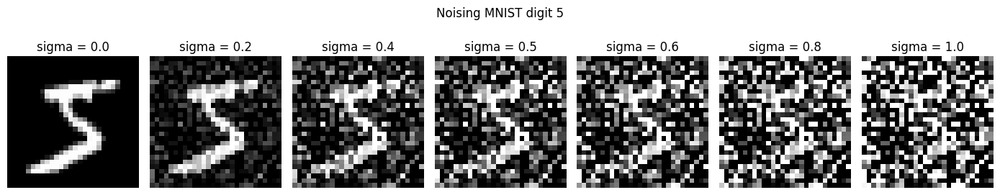
I trained a U-Net to recover clean images from inputs at σ = 0.5, drawing fresh noise for every batch. The model uses 128 base channels (D = 128), batch size 256, and five epochs of Adam with learning rate 10−4. MSE compares each prediction with its clean target. By epoch 5, most background noise is removed, though the strokes remain slightly soft.
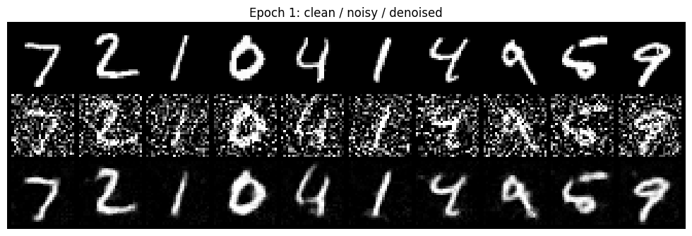
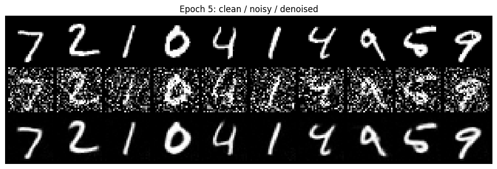
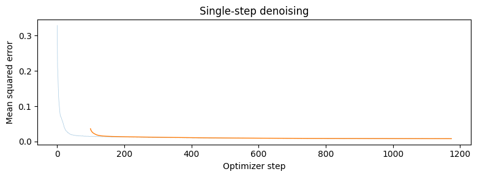
I then tested the epoch-5 model across a range of noise levels, including σ = 0.5 as a reference. With the digits and noise pattern fixed, lower σ gives recognizable reconstructions, although even clean inputs are smoothed. At σ = 0.8–1.0, distorted strokes and residual noise become more prominent.
Rows: clean targets, noisy inputs, predictions.
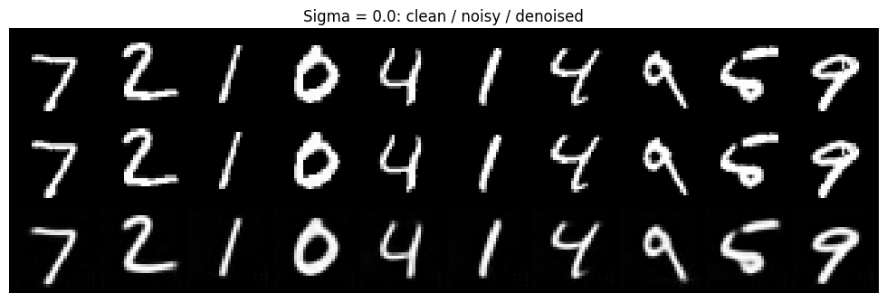
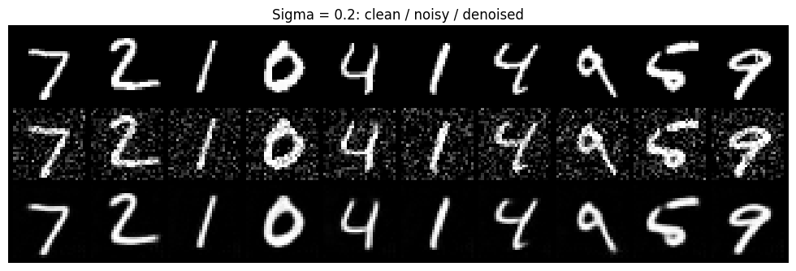
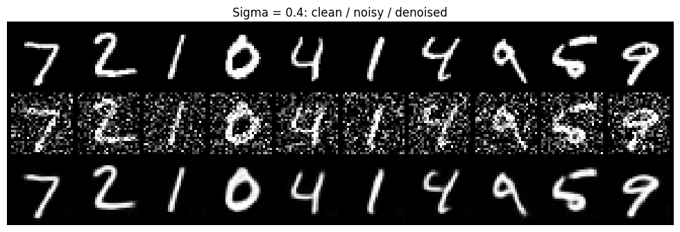
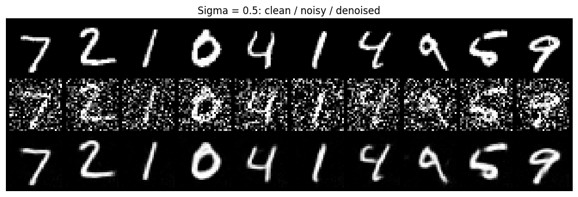
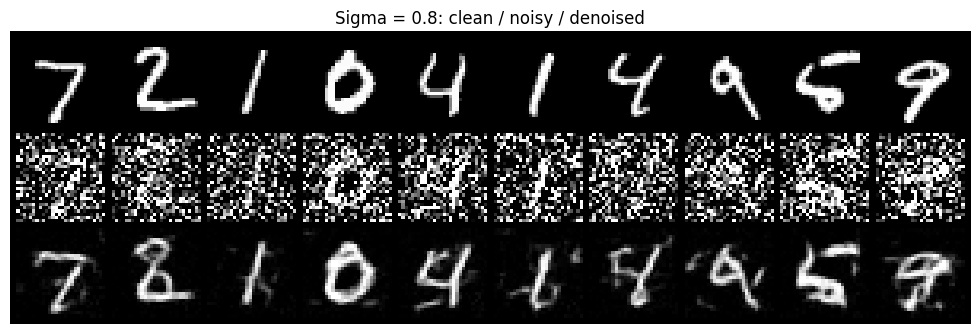
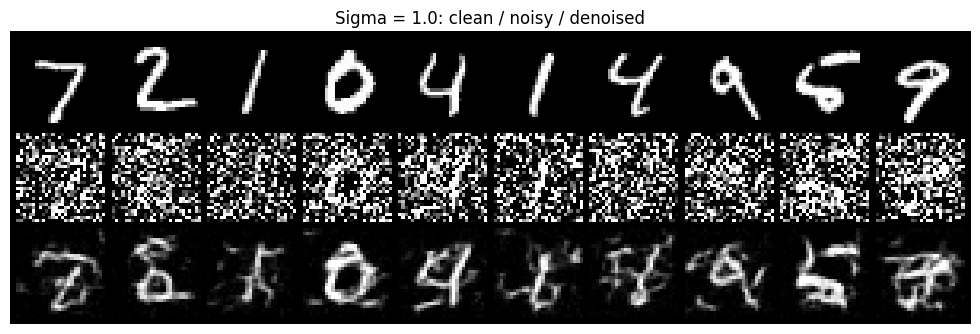
The previous inputs still contained the target digit. To remove that information, I trained a fresh U-Net on pure Gaussian noise with the same settings and clean targets. Because noise and target are independent, MSE favors the pixel-wise average of digits 0–9. The nearly identical blurry outputs below reflect this averaging, rather than successful generation of individual digits.
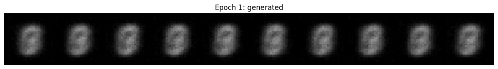
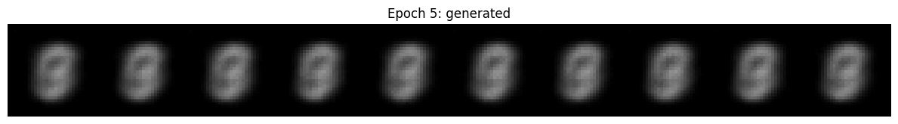
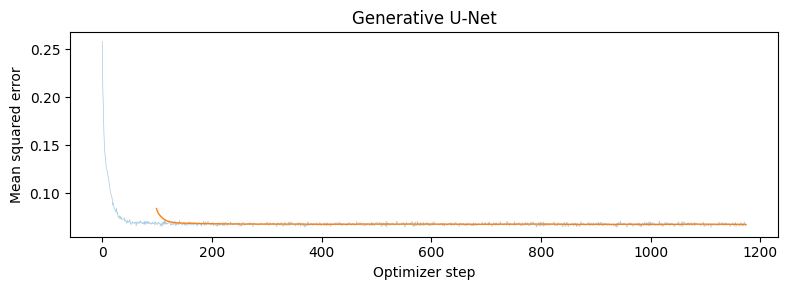
To generate digits, I switched from one-step reconstruction to flow matching. Training pairs Gaussian noise x0 with a clean digit x1, samples a time t, and constructs xt = (1 − t)x0 + tx1. The U-Net predicts the target velocity x1 − x0, using learned time embeddings at two decoder stages. At inference, Euler sampling follows these predictions from noise toward an image.
I trained with D = 64, batch size 64, and ten epochs of Adam, starting at learning rate 10−2 and decaying it each epoch by γ = 0.11/10. Generation uses 50 Euler steps and seeds 0–9, held fixed across epochs.
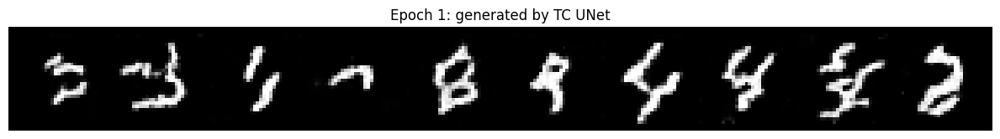
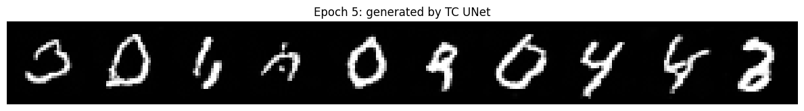
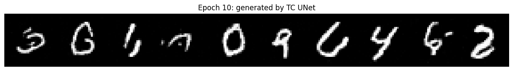
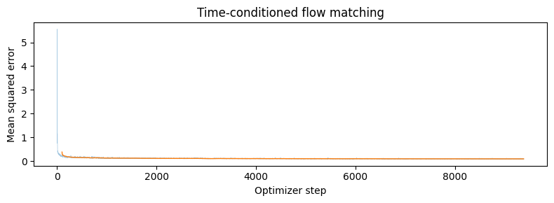
Time conditioning identifies the stage of generation, but not the desired digit. I added one-hot class embeddings to provide that control, keeping the same training width, batch size, and Adam schedule. Dropping class information for 10% of examples also trains the unconditional prediction needed for CFG.
At sampling time, I combine the two predictions as v = vuncond + 5(vcond − vuncond) and take 300 Euler steps. Unlike Part A’s convention, guidance scale 1 here gives ordinary conditional sampling.
Columns request digits 0–9; rows use seeds 0–3, fixed across epochs. The backgrounds become cleaner and the requested digits more consistent by epochs 5 and 10.
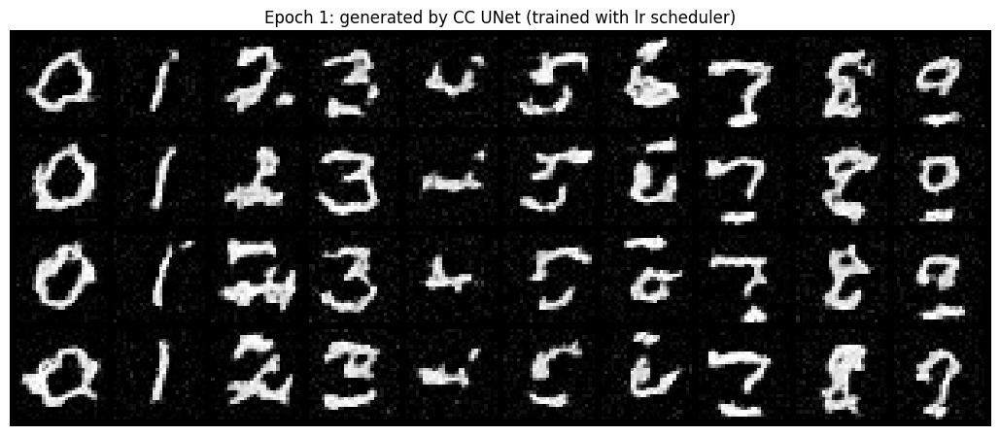
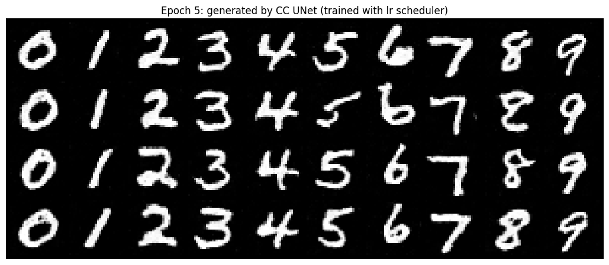
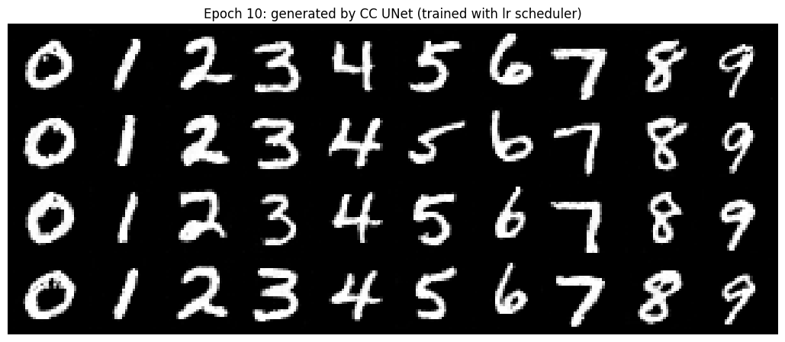
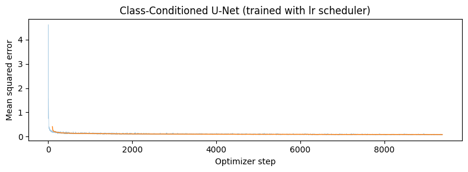
Finally, I removed the scheduler and trained a fresh model at a constant learning rate of 3 × 10−3. This lower rate replaces the scheduled run’s larger initial updates with a compromise that also allows later refinement. The architecture, batch size, and ten-epoch budget stay unchanged.
With identical sampling seeds, 300 Euler steps, and guidance scale 5, both final grids contain legible digits with different strokes. Their quality is visually comparable, but unmatched initialization and training randomness prevent a controlled claim of equal performance.
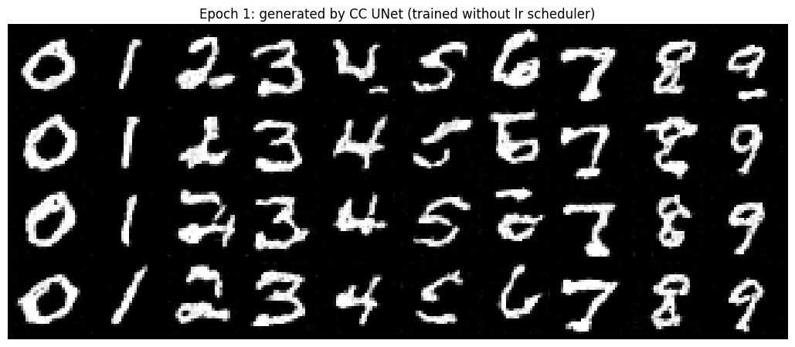